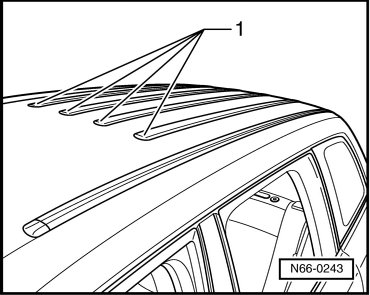

Roof Trim Strips
Moldings and Trim
Roof Trim Strips
• It is not possible to remove the roof decorative moldings without destroying them.
Removing
- Before removal, heat the roof trim strip - 1 - using the hot air gun (V.A.G 1416) and then pull off.

Installing
- Remove any adhesive residue with Adhesive Remover (VAS 6349).
- Always clean adhesion surface thoroughly with adhesive remover D 002 000 10 before bonding on.
- Before installing roof trim strips - 1 -, remove protective film. Mount the decorative moldings and then press on them with the roller (3356). Processing temperature approx. 20 °C.
• Only remove the protective film right before assembly.